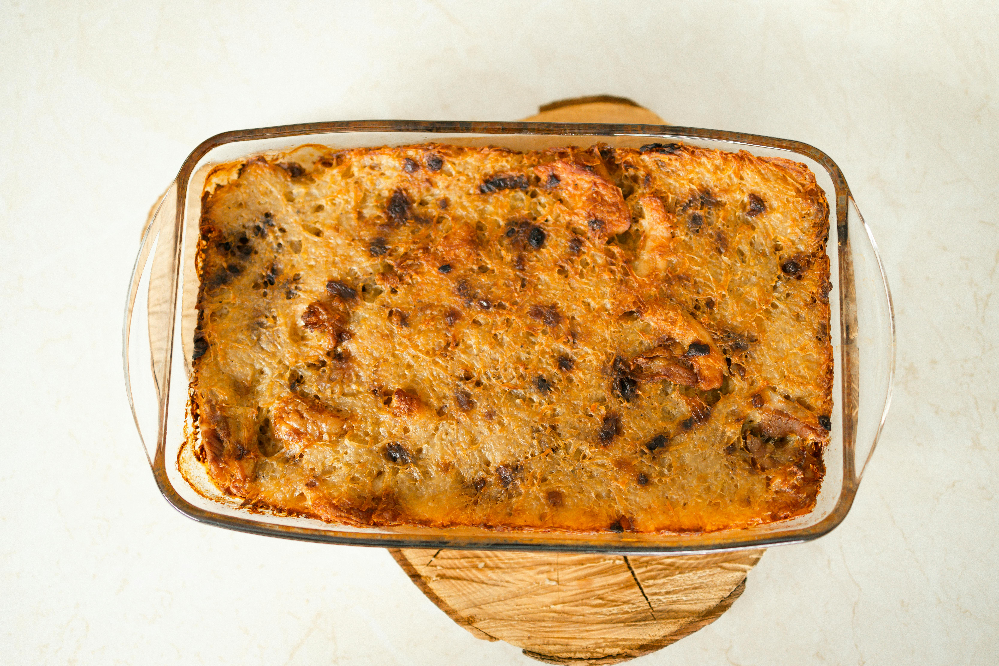

Shepherd's pie is a classic Irish comfort food made with a savory filling of ground lamb or beefcooked with vegetables like peas, carrots, and onions, all bound together with a rich gravy. The mixture is topped with a layer of creamy mashed potatoes and then baked until golden and crispy. This hearty dish is known for its satisfying combination of flavors and textures, with the savory filling complementing the smooth, fluffy mashed potatoes. Shepherd's pie is often served as a warm, filling meal, perfect for family gatherings or cold weather.